NeuroROP master-demo — Capture Pack
12 кадров, локальный fictional DEMO API, viewport 1920×1080. Это storyboard preview, не финальный монтаж.
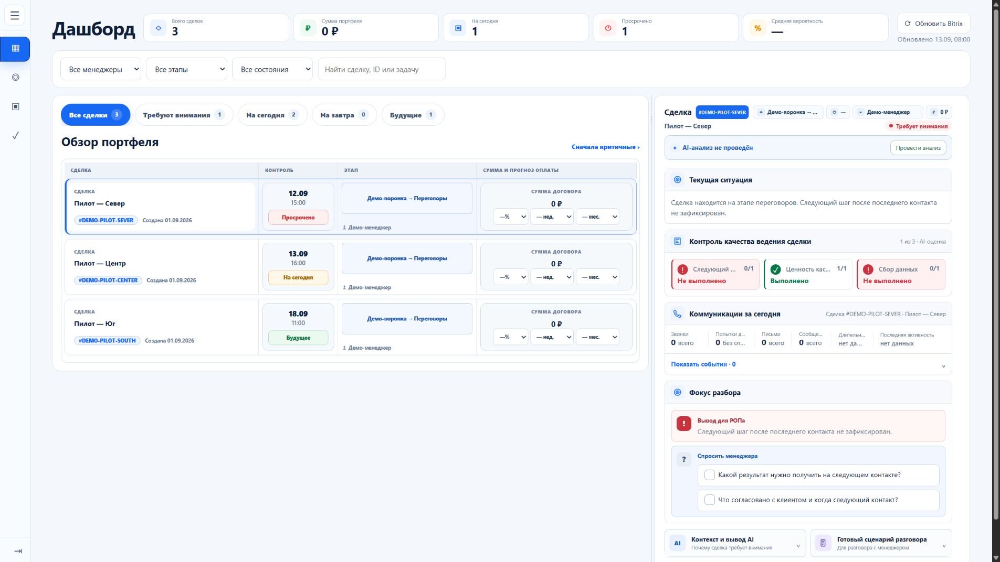
01 · РОП · DashboardИсходный портфель перед фокусировкой.
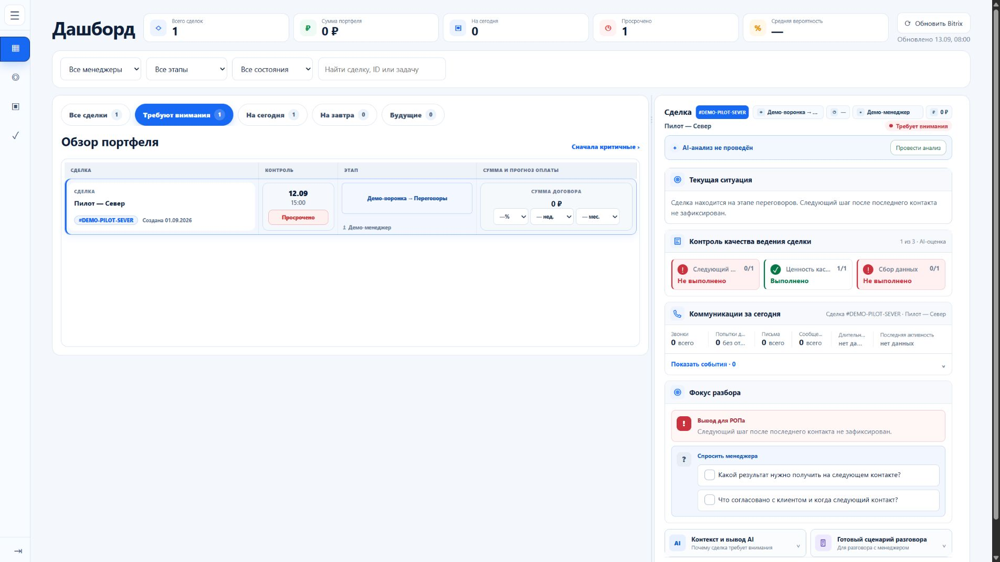
02 · РОП · Требуют вниманияОдна DEMO-сделка в фокусе.
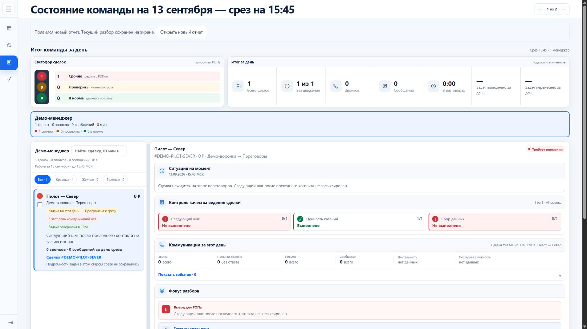
03 · РОП · Срез 15:45Сохранённая подготовка к планёрке.
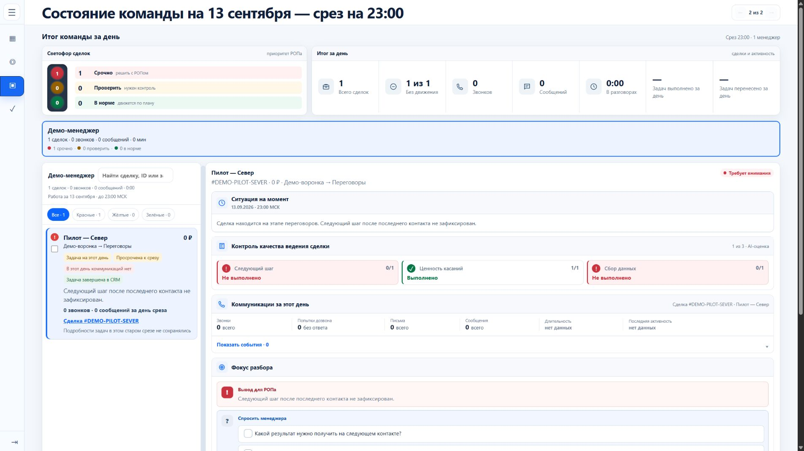
04 · РОП · Срез 23:00Сохранённый дневной итог.
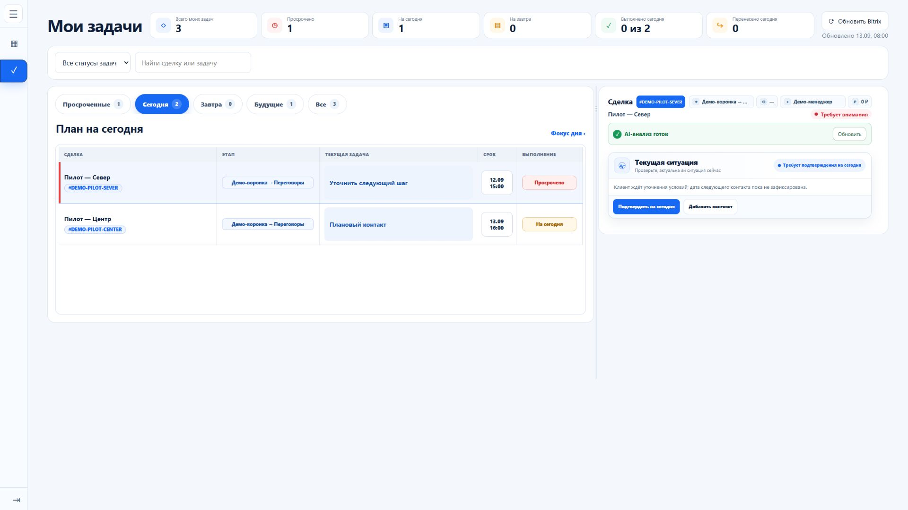
05 · Менеджер · Мои задачиСписок работы и задача на сегодня.
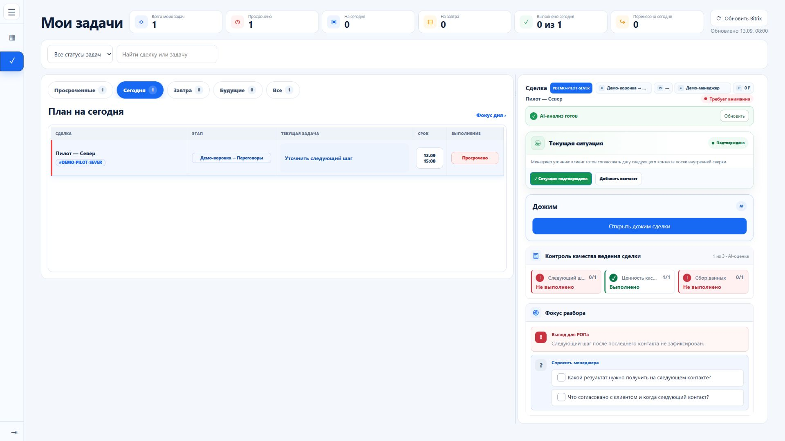
06 · Менеджер · СитуацияПосле добавления ручного контекста.
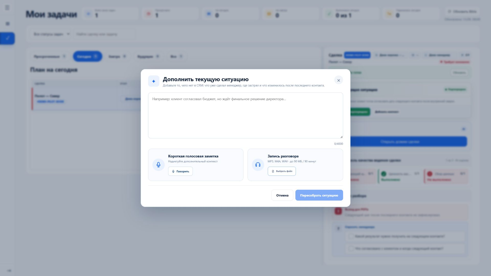
07 · Менеджер · Ручной контекстТекстовая или голосовая заметка.
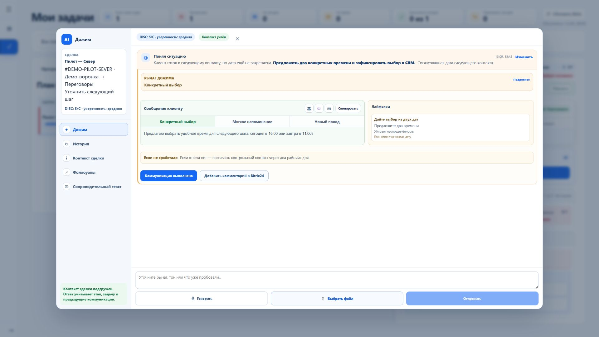
08 · Менеджер · ДожимГотовый следующий шаг и варианты сообщения.
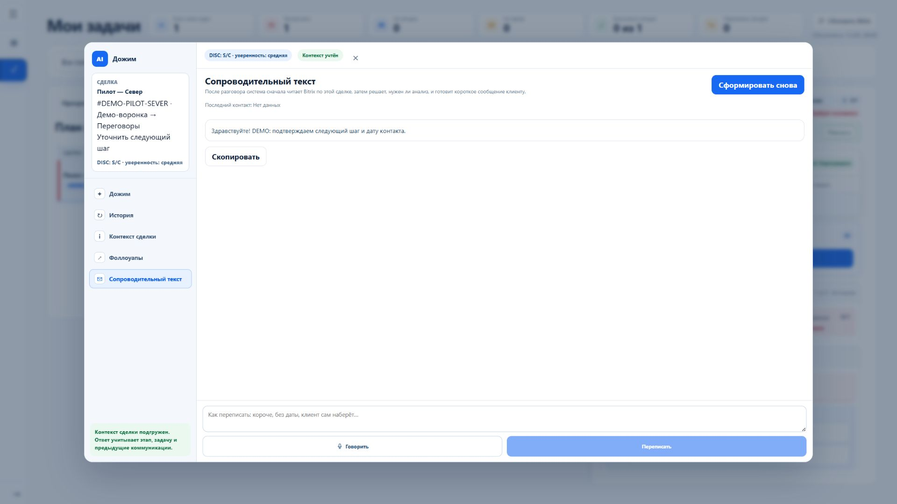
09 · Менеджер · Сопроводительный текстГотово к копированию, без автоотправки.
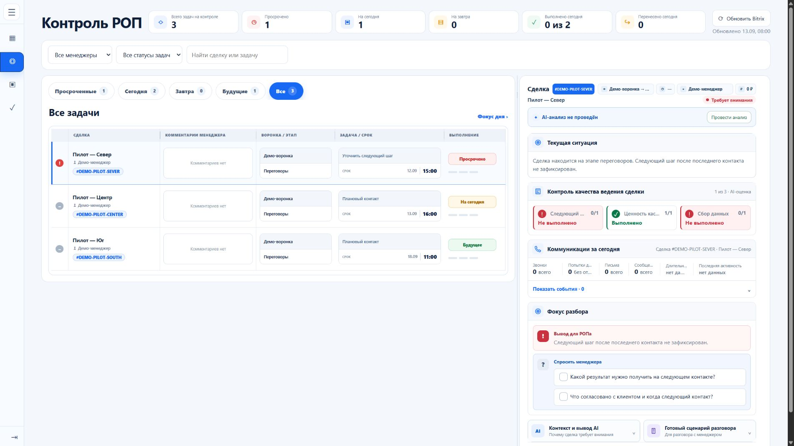
10 · РОП · КонтрольПросрочки и вопросы к менеджеру.
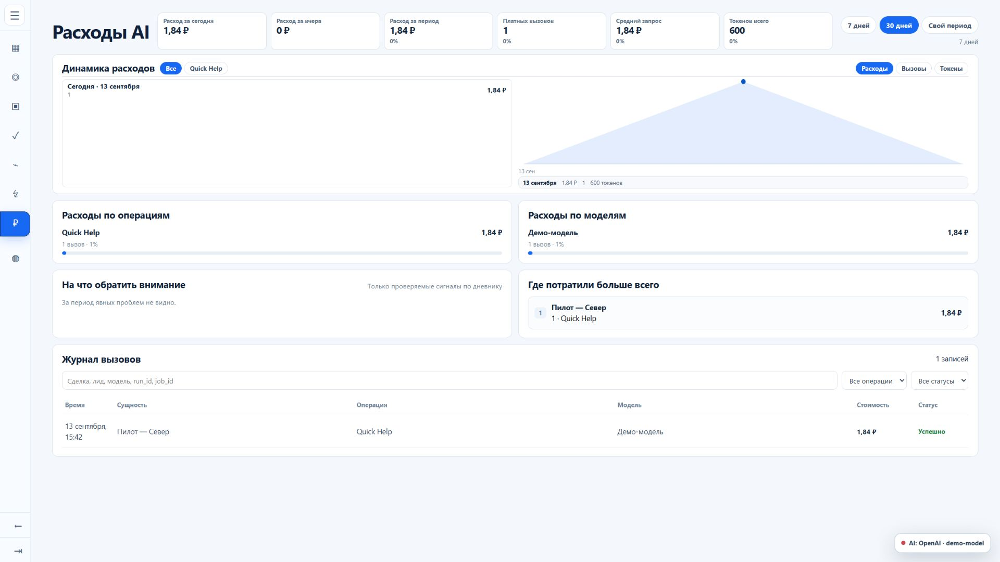
11 · Руководитель · Расходы AIKPI и распределение ресурсов.
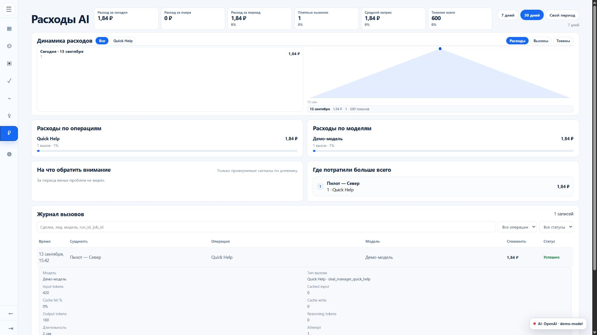
12 · Руководитель · СобытиеФиктивная детализация токенов и стоимости.